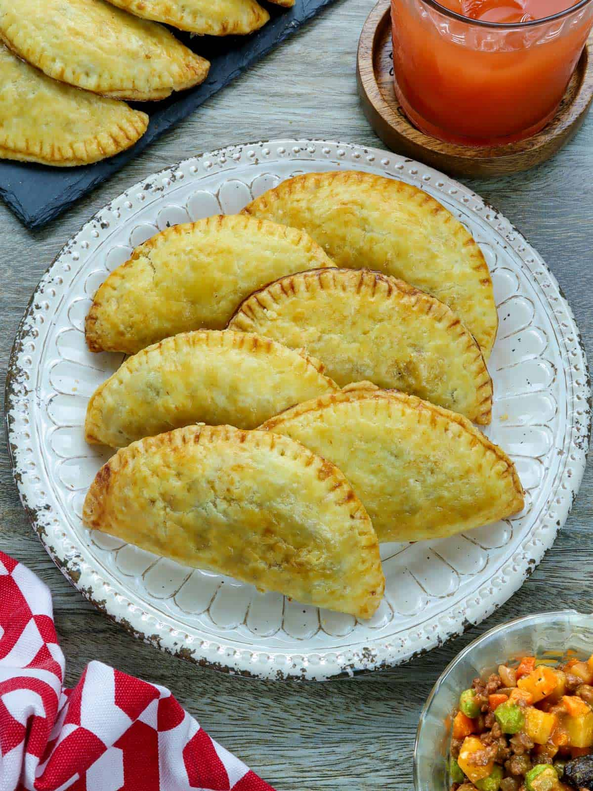
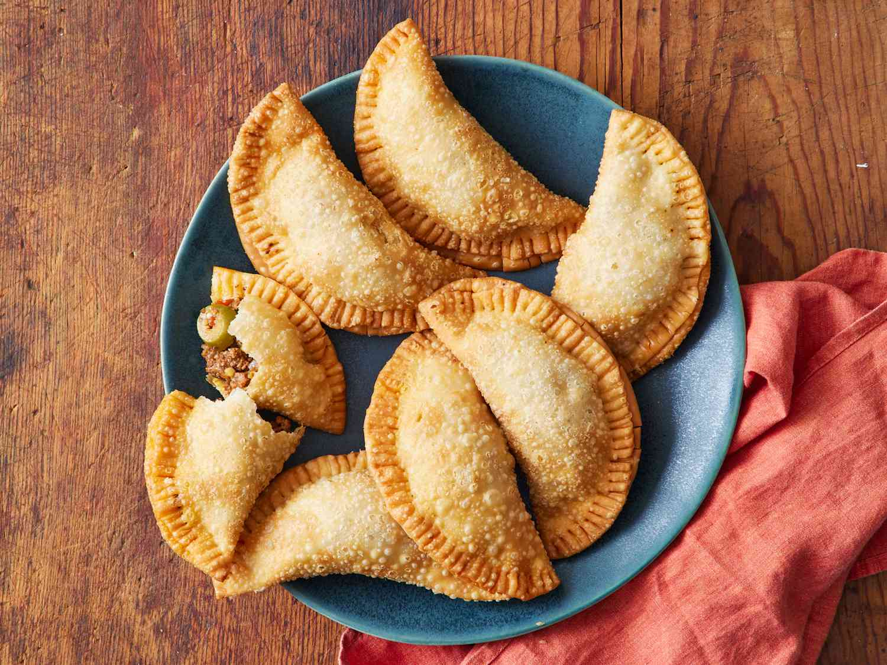
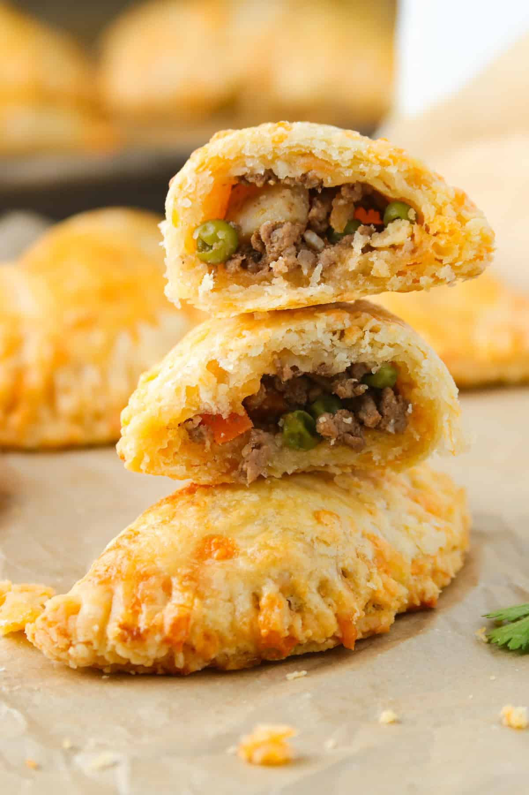
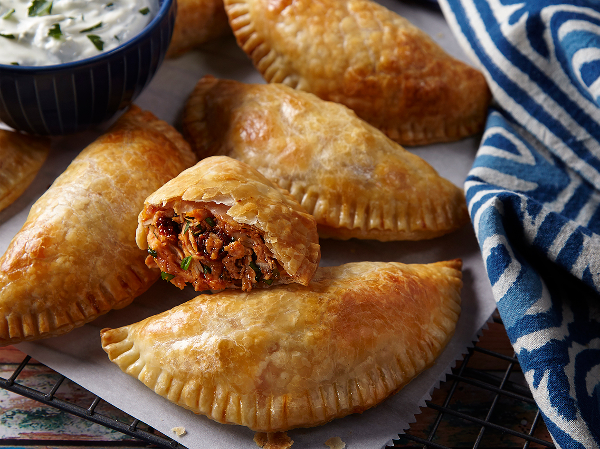
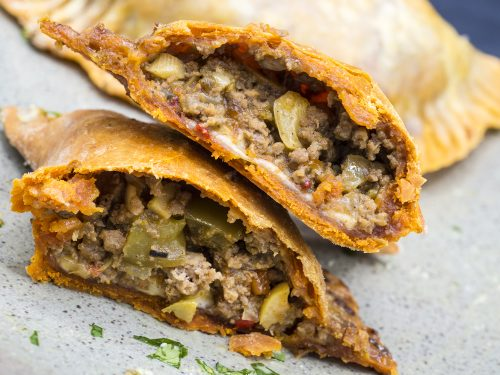

Empanada





History
Ang Empanada ay nagmula sa Spain, mula sa salitang “empanar” na ibig sabihin ay “to wrap in bread.” Dinala ito sa Pilipinas noong panahon ng Spanish colonization of the Philippines, at kalaunan ay nagkaroon ng iba’t ibang regional versions. Isa sa pinakasikat ay ang Ilocos empanada, na may kakaibang orange na crust at savory filling. Sa paglipas ng panahon, nag-adapt ang mga Pilipino ng iba’t ibang fillings—mula sa karne hanggang sa gulay—kaya naging versatile at paboritong merienda sa buong bansa.
Ingredients & Notes
All-purpose flour
Butter or shortening
Ground meat
Potatoes
Carrots
Onions
Garlic
Egg
Price
₱20